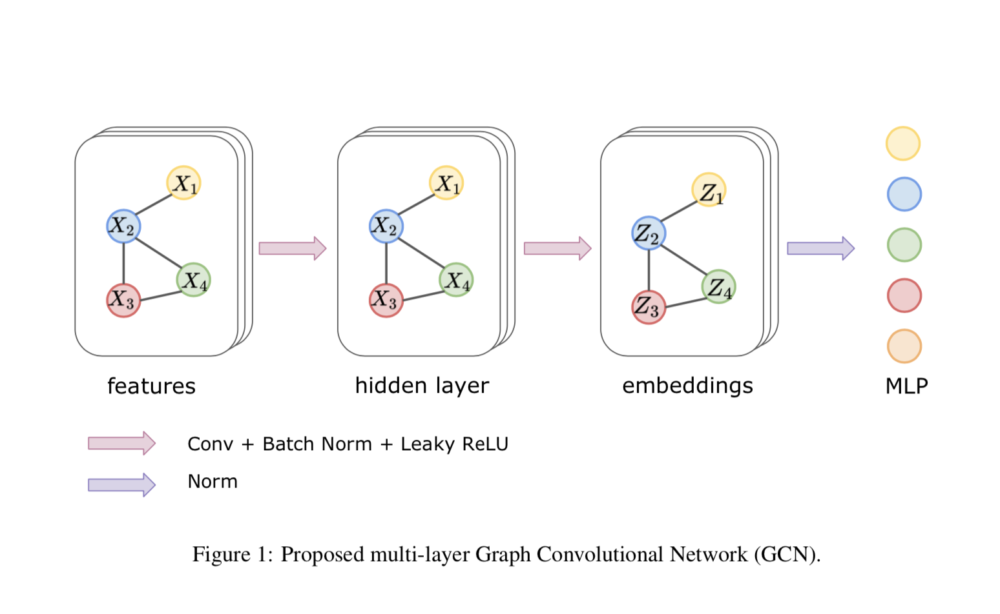
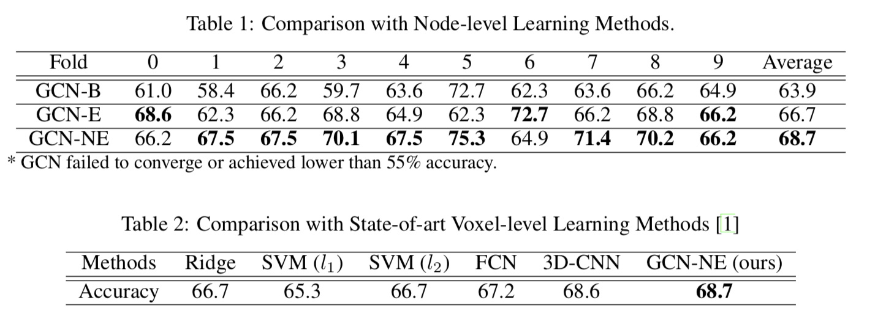
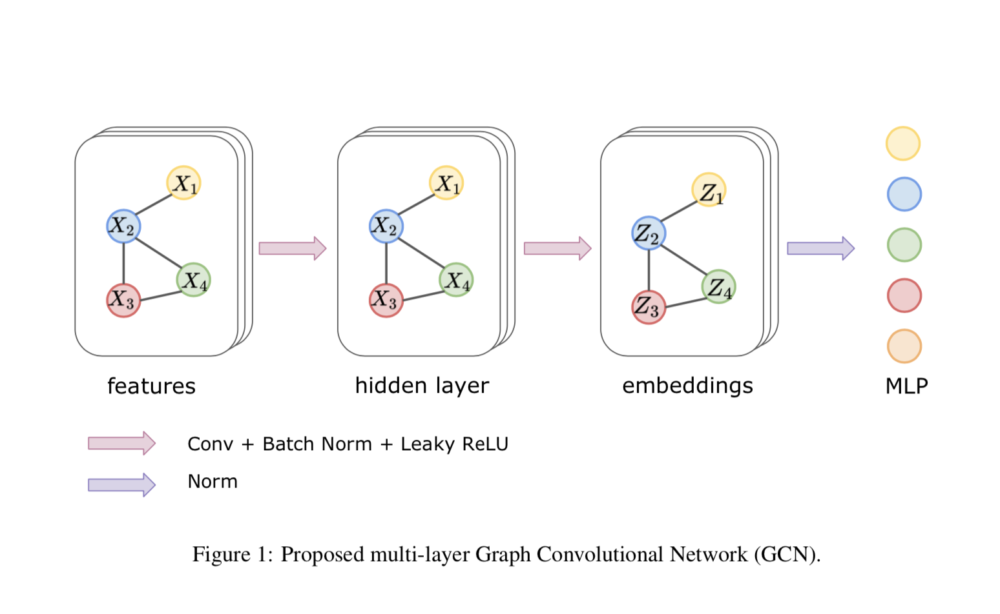
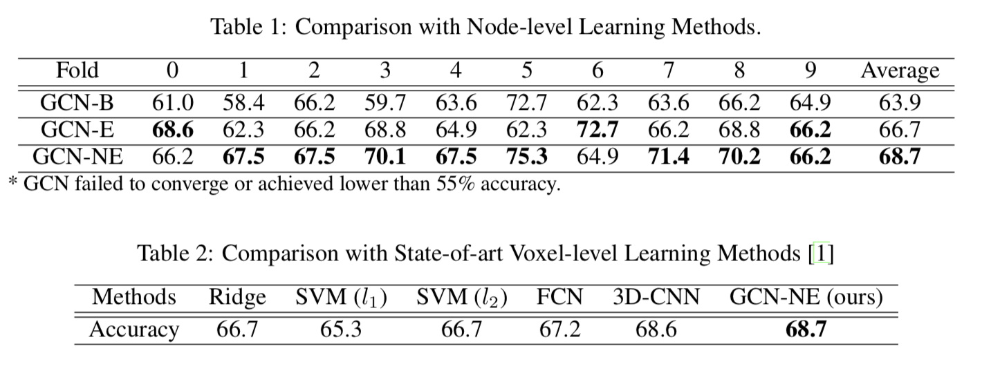

Project information
- Category: Deep Learning
- Co-Authors: Rui Shen, Rongguang Wang
- Project date: Dec, 2019
- Github: https://github.com/Sherry-SR/dl_graph_connectomes
Abstract
Brain connectomes is a comprehensive map that shows the structural and functional connectivity of neural pathways in the human brain. Analyzing the information encoded by connectomes can promote a critical understanding of the early diagnosis of many neuropsychiatric disorders, such as Autism Spectrum Disorder (ASD). Brain connectomes data is usually represented as a graph with a connectivity matrix illustrating the strength of neural connections (e.g. temporal correlation of brain activities) between brain regions. In contrast to classical graph analysis methods that depend on hand-engineering descriptors, recent progress of extending deep learning approaches to non-grid data have opened new opportunities for building predictive models for brain connectomes in a data-driven learning fashion. However, due to the existence of large noise and limited training samples, directly applying a deep network is prone to over-fitting. In this work, we present a novel graph convolutional neural network (GCN) with node-wise batch normalization and embedding normalization 1 for better generalization. We performed experiments on the ABIDE dataset and achieved state-of-the-art 68.7% classification accuracy.
Method
In this section, we described our approach for classifying subjects with ASD. Figure 1 illustrates an overview of the proposed approach for ASD classification. In the proposed method, we used the first-order approximation of GCN in the first stage to obtain embedding for a graph, and a multi-layer perceptron (MLP) in the second stage for the classification task. Multiple normalization tricks were used to improve the stability in the training process and achieve better generalization. A Dropout layer was used between MLP to prevent further over-fitting.
Data Set
The Autism Brain Imaging Data Exchange (ABIDE) - ABIDE is a multi-site dataset openly sharing anatomical and functional brain imaging data of 539 individuals diagnosed with Autism Spectrum Disorder (ASD), as well as 573 normal controls (NC). We used the data processed by the Configurable Pipeline for the Analysis of Connectomes (CPAC) [11]. This pipeline performs motion correction, global mean intensity normalization and standardization of fMRI data to MNI space
Functional Connectomes - Functional connectomes were generated by first averaging rs-fMRI time series for each ROI, then calculating the temporal Pearson correlation coefficients between each pair of averaged fMRI signals.
Experiments
In our experiments, we performed a node-level connectomes-based classification task of ASD v.s. NC using 4 deep learning frameworks: GCN, GCN with batch normalization (GCN-B), GCN with embedding normalization (GCN-E), and GCN with both node and embedding normalization (GCN- NE). We conducted 10-fold cross-validation on the ABIDE dataset. Results are also compared with other state-of-art voxel-level learning methods.
Results
Table 1: Comparison with Node-level Learning Methods. \begin{tabular}{cccccccccccc} \hline Fold & 0 & 1 & 2 & 3 & 4 & 5 & 6 & 7 & 8 & 9 & Average \\ \hline \hline GCN-B & 61.0 & 58.4 & 66.2 & 59.7 & 63.6 & 72.7 & 62.3 & 63.6 & 66.2 & 64.9 & 63.9 \\ \hline GCN-E & $\mathbf{6 8 . 6}$ & 62.3 & 66.2 & 68.8 & 64.9 & 62.3 & $\mathbf{7 2 . 7}$ & 66.2 & 68.8 & $\mathbf{6 6 . 2}$ & 66.7 \\ \hline GCN-NE & 66.2 & $\mathbf{6 7 . 5}$ & $\mathbf{6 7 . 5}$ & $\mathbf{7 0 . 1}$ & $\mathbf{6 7 . 5}$ & $\mathbf{7 5 . 3}$ & 64.9 & $\mathbf{7 1 . 4}$ & $\mathbf{7 0 . 2}$ & $\mathbf{6 6 . 2}$ & $\mathbf{6 8 . 7}$ \\ \hline GCN failed to converge or achieved lower than $55 \%$ accuracy. & & & & & \end{tabular} Table 2: Comparison with State-of-art Voxel-level Learning Methods [1] \begin{tabular}{ccccccc} \hline Methods & Ridge & SVM $\left(l_{1}\right)$ & SVM $\left(l_{2}\right)$ & FCN & 3D-CNN & GCN-NE (ours) \\ \hline \hline Accuracy & 66.7 & 65.3 & 66.7 & 67.2 & 68.6 & $\mathbf{6 8 . 7}$ \\ \hline \end{tabular}